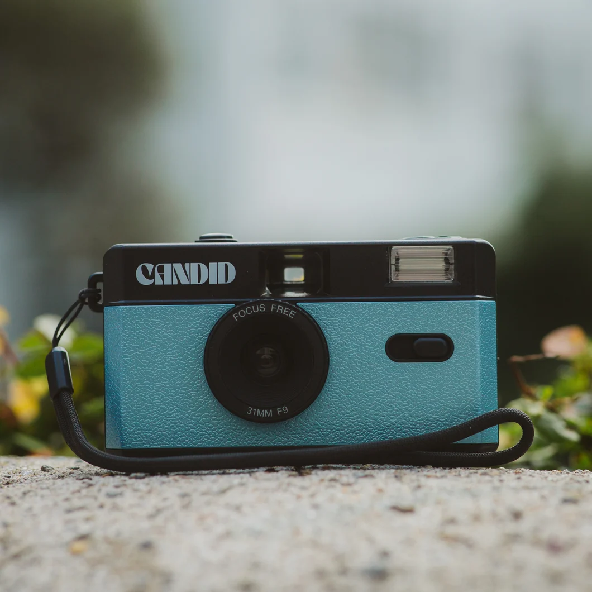

My Favorite Hobby: Photography

Getting Started
Photography has been a passion of mine for several years. It allows me to capture fleeting moments and view the world from entirely new perspectives. When I first started, I used a basic point-and-shoot camera, but I quickly realized I wanted more control over the exposure, lighting, and composition. Learning the exposure triangle—aperture, shutter speed, and ISO—was the biggest turning point in my hobby.
My Favorite Subjects
While some photographers prefer working in a studio with controlled lighting, I am much more drawn to nature and landscapes. There is something incredibly peaceful about waking up before dawn, hiking to a remote location, and setting up my tripod to catch the morning golden hour. The way light interacts with the environment changes every single day, meaning no two photos are ever truly identical.
I also enjoy street photography when I visit the city. Capturing candid moments of everyday life tells a completely different kind of story than a sweeping mountain landscape. It requires quick reflexes and a good eye for geometry and timing.
Equipment I Use
Currently, I shoot on a mirrorless camera system. The switch from DSLR to mirrorless reduced the weight of my gear significantly, which is crucial when hiking long distances. I primarily use a 24-70mm lens for versatility, but I also carry a 35mm prime lens for low-light situations. Regardless of the gear, the most important tool is always the photographer's eye.
Ultimately, photography is about storytelling. Even without expensive equipment, anyone can learn to compose a compelling image that makes the viewer feel something. I look forward to continuing this journey and eventually putting together a gallery of my best prints.